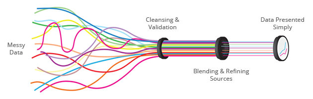
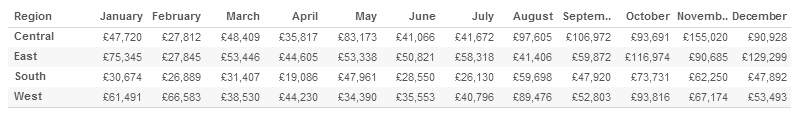
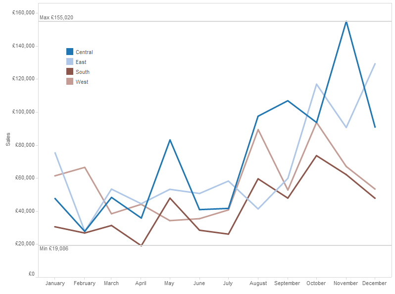

What is Business Intelligence? (BI)
- A Definition
Data visualisation – the next big thing is here
The term Business Intelligence (BI) is defined as the ability for your company to gather, store, access and analyse data and to transform this into actionable information allowing you to make informed decisions.
What is the process
BI represents the tools and systems that are used to convert your business data into knowledge about: your customer profiling, product profitability, market research, market segmentation, statistical analysis, inventory analysis.

Business Intelligence can ensure that the right information gets to the right people, at the right time, via the right channel so that makes your entire organisation work smarter, more productive – with better focus – and ultimately more profitable.
InterWorks Europe are specialists in Business Intelligence and can assist you with answering your business questions and finding ways to become leaner and more efficient.
- An Example
Finding Answers
An important aspect of Business Intelligence is rapidly analysing your data and finding business answers. Visual analysis is proven to be best practice BI analysis.
The Old Way
In the example below you see data represented in spreadsheet form. See how quickly you can answer the following questions using the spreadsheet view:
1) Which month produced the greatest sales?
2) Which region generated the lowest amount of sales in any month? What was the amount?
3) Which region generated the most sales and which was second?
As you do it think about the number of values you have to remember, and how many times you need to go back to a previous month to read the value again.
The Visualisation
Below shows the same data but visualised with Tableau software, again try answering the above questions using the below view.

InterWorks Europe are specialists in Tableau, the most versatile data visualisation software, the above example is built using Tableau Desktop.
Now read more about what Tableau Products and InterWorks Europe Services can do for you…
 English
English